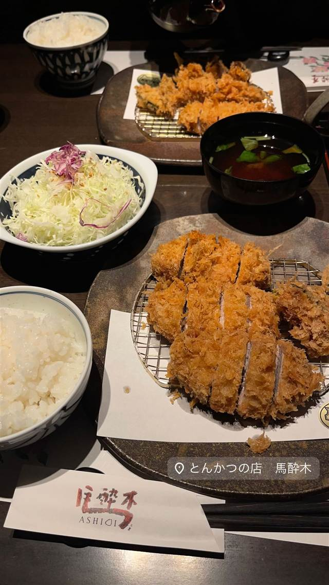
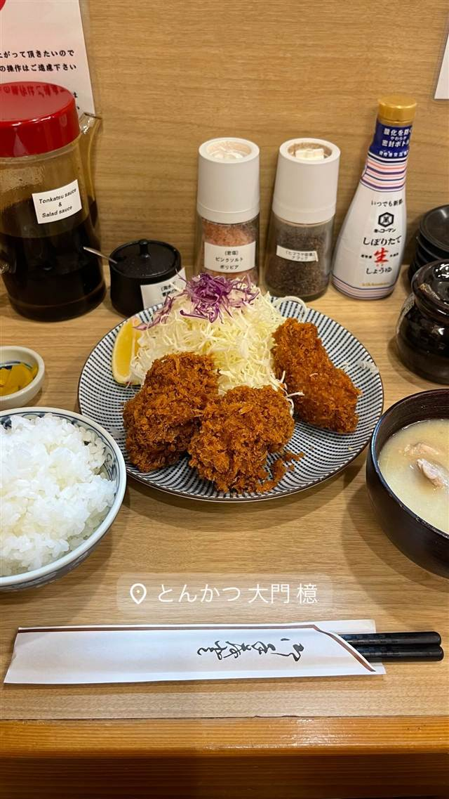
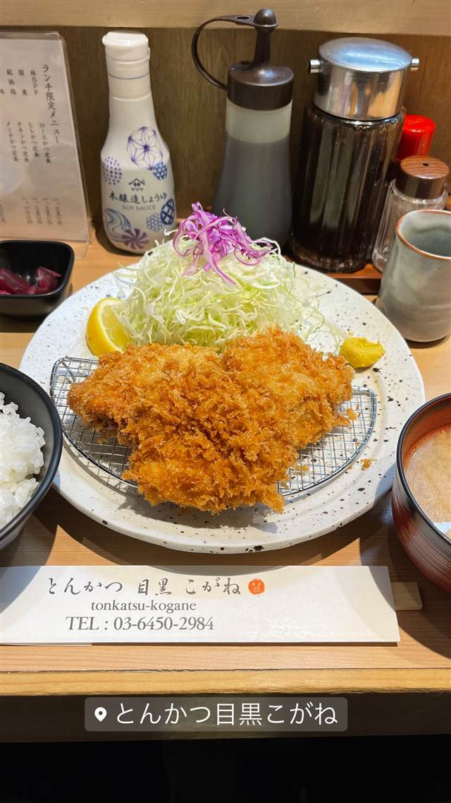

とんかつ・揚げ物 · とんかつ · 都筑ふれあいの丘
とんかつの店 馬酔木（あしび）
杜仲高麗豚を使った厚切りロースかつ、食べログ神奈川で上位常連
とんかつの店 馬酔木
横浜市都筑区、都筑ふれあいの丘駅近くで2005年から続くとんかつ専門店。杜仲高麗豚など厳選した豚肉を使った厚切りロースかつが評判で、食べログの神奈川とんかつランキングでも上位の常連。
TRIVIA
豆知識
- 屋号『馬酔木（あしび）』は、馬が木の香りに酔ったという故事に由来し、古典文学では『繁栄』を意味する枕詞としても使われる言葉
REVIEWS
世間の評判
3.69食べログ
柔らかい脂の質と揚げ加減の良さ
- 杜仲高麗豚などの脂に甘みがあり肉質も柔らかいと評価する声が多い
- サクサクジューシーで揚げ加減がちょうど良いと評価する声がある
- 特上ヒレカツなどは価格が高めでコストパフォーマンスを指摘する声もある
- 住宅街にあり土日は帰る頃に行列ができるほど混雑すると報告されている
食べログ 口コミ587件
| 創業 | 2005年開業 |
|---|---|
| 看板 | 厚切りロースかつ定食（ランチ1,300円） |
| こだわり | 杜仲高麗豚など全国から厳選した豚肉を使用 |
| 掲載・評価 | 食べログ神奈川県とんかつジャンルで上位常連 |
| どこから | 東京から1時間ほど |
| 営業時間 | 月 11:30-15:00 火 休み 水〜日 11:30-15:00、17:30-21:30 |
| 予算 | 昼 ¥1,000～¥1,999 夜 ¥2,000～¥2,999 |
| 場所 | 都筑ふれあいの丘駅 神奈川県横浜市都筑区高山14-5 |
食べたもの：とんかつ定食
OFFICIAL
店からの知らせ
その日の限定や臨時の休みは、店のInstagramに出ます。
NEARBY
近い店・同じ系統の店
-
 とんかつ 両国
とんかつ はせ川 両国店
大門の名店『むさしや』仕込み、三元豚のとんかつがビブグルマン4年連続
昼 ¥1,000～¥1,999 夜 ¥2,000～¥2,999
とんかつ 両国
とんかつ はせ川 両国店
大門の名店『むさしや』仕込み、三元豚のとんかつがビブグルマン4年連続
昼 ¥1,000～¥1,999 夜 ¥2,000～¥2,999
-
 とんかつ 溜池山王
とんかつ まさむね
岩塩30種類以上から厳選、ミシュランビブグルマン4年連続の上ロースかつ
昼 ¥1,000～¥1,999 夜 ¥2,000～¥2,999
とんかつ 溜池山王
とんかつ まさむね
岩塩30種類以上から厳選、ミシュランビブグルマン4年連続の上ロースかつ
昼 ¥1,000～¥1,999 夜 ¥2,000～¥2,999
-
 とんかつ 三軒茶屋駅
生産者組合 とんかつ 幻水豚（ゲンスイトン）
還元水を飲ませ自然飼育した幻水豚を使う「白いとんかつ」
昼 ¥1,000～¥1,999 夜 ¥1,000～¥1,999
とんかつ 三軒茶屋駅
生産者組合 とんかつ 幻水豚（ゲンスイトン）
還元水を飲ませ自然飼育した幻水豚を使う「白いとんかつ」
昼 ¥1,000～¥1,999 夜 ¥1,000～¥1,999
-
 とんかつ 白金高輪駅
とんかつ 王龍
店主引退で暖簾を継いだ、公式サイトは今も旧店名「大五」のまま
昼 ¥1,000～¥1,999 夜 ¥3,000～¥3,999
とんかつ 白金高輪駅
とんかつ 王龍
店主引退で暖簾を継いだ、公式サイトは今も旧店名「大五」のまま
昼 ¥1,000～¥1,999 夜 ¥3,000～¥3,999
-

とんかつ 大門 とんかつ檍 大門店 銀座三笠会館で修行した創業者が始めた、林SPFポークの厚切りとんかつ 昼 ¥1,000～¥1,999 夜 ¥1,000～¥1,999 -

とんかつ 目黒駅 とんかつ目黒こがね 目黒の老舗「とんかつ大宝」で修行した店主の、林SPF豚ロースかつ 昼 ¥1,000～¥1,999 夜 ¥1,000～¥1,999